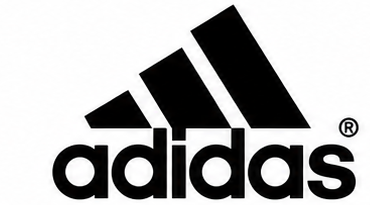
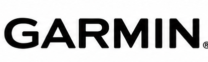
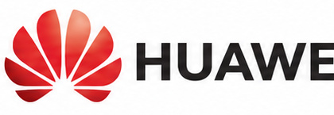
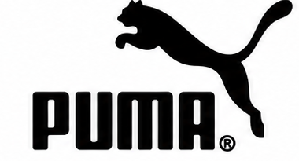
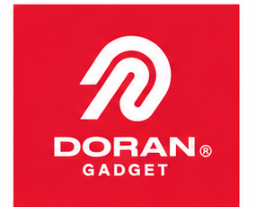
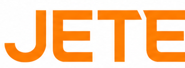
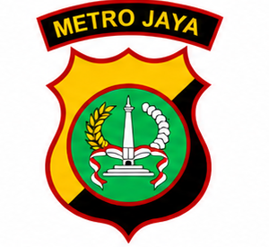
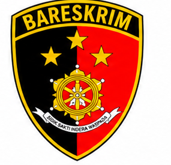
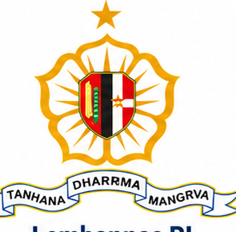
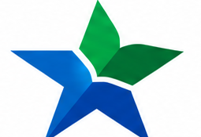

01
6 customer
Retail & Mall

Adidas
Garmin
Huawei
Puma
Doran Gadget
JETEBukti rekam jejak instalasi Teknologi Visual Indonesia di instansi kepolisian, pusat perbelanjaan komersial, institusi pendidikan tinggi, dan venue publik.
Meeting room, boardroom direksi, lobby video wall, dan display komunikasi internal kantor.
Smart classroom, aula serbaguna kampus, lab presentasi digital, dan sistem kuliah hibrida.
Command center 24/7, monitoring kepolisian, wayfinding bandara, dan media informasi publik.
Ballroom hotel, gedung pertemuan, audio paging komersial, dan display promosi mall.
Diskusikan spesifikasi ruang, estimasi anggaran, dan jadwal survey lokasi gratis dengan tim engineering kami.
Pengalaman implementasi solusi visual untuk sektor pemerintahan, ritel, pusat perbelanjaan, dan brand teknologi.

Adidas
Garmin
Huawei
Puma
Doran Gadget
JETE
Polda Metro Jaya
Bareskrim Polri
Lemhannas RI
Perpustakaan Nasional RI